Components
Motherboard
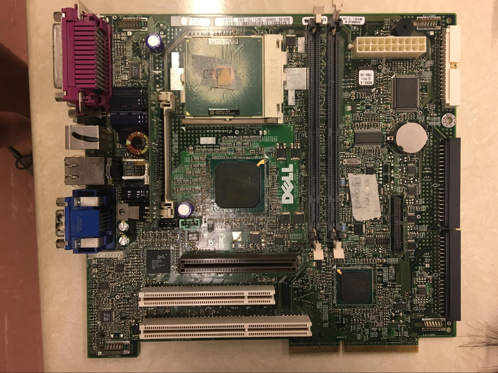The motherboard is the internal component of a computer that carries the CPU, expansion slots, power connectors, memory chips (RAM and ROM), other microchips needed to function. It is also known as the mainboard, baseboard, logic board, system board, etc.
CPU
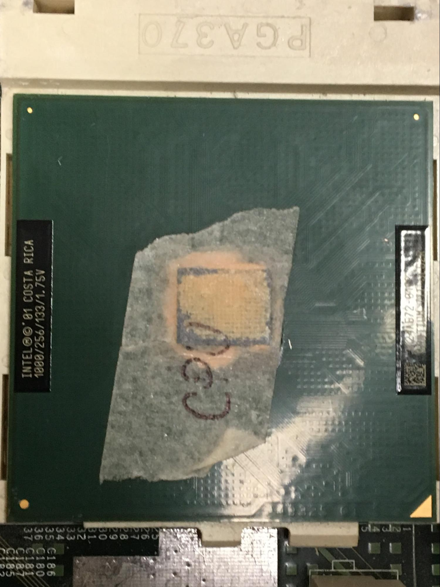CPU stands for Central Processing Unit. The CPU is a small electronic component that is occasionally called the brain of the PC. The CPU is responsible for two things. One of them is to carry out commands to make the other hardware parts perform the action. The other responsibility is to process data. Although the instructions the CPU performs are simple, they can execute millions and millions of instructions every second. The fact that the CPU can perform many tasks is what makes a PC powerful.
RAM
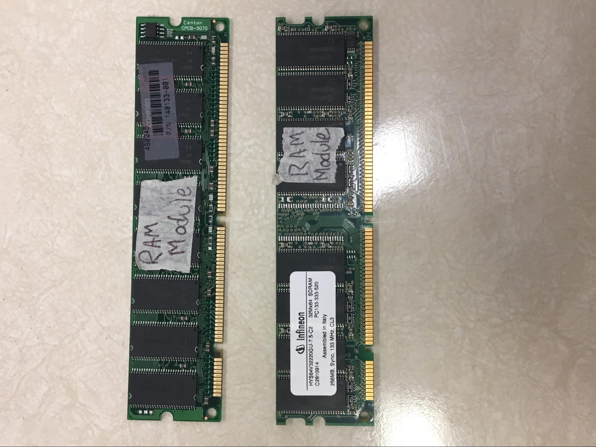(Random Access Memory) RAM is a card connected to the motherboard which is used to temporarily store information. As soon as computer is turned off, information not saved inside the hard drive won’t be able to be recalled. The CPU uses RAM when it’s operating because it needs to store temporary data while is operating. If more of RAM is present inside the CPU, the faster the computer is since more data can be stored temporarily.
Power Supply
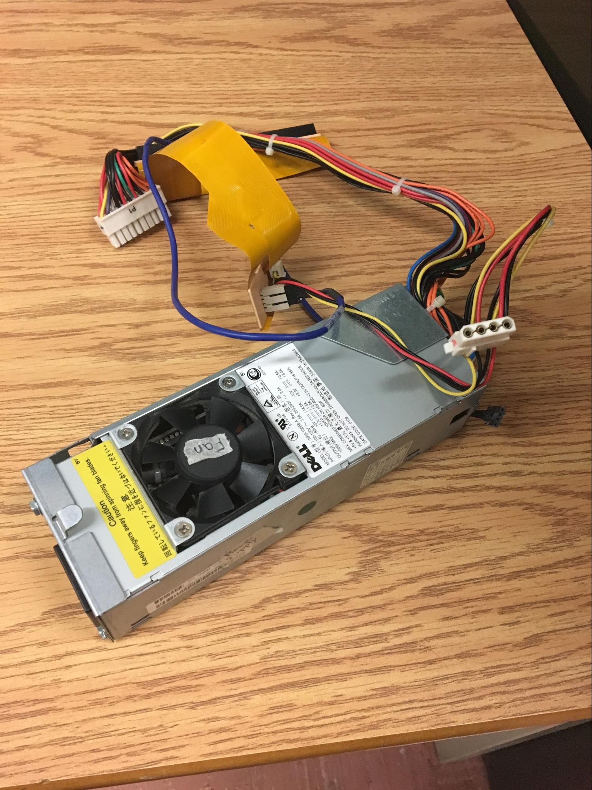The power supply is required to transform the incoming AC power into 5V and 12V DC power the other internal components of the PC.
Sound Card
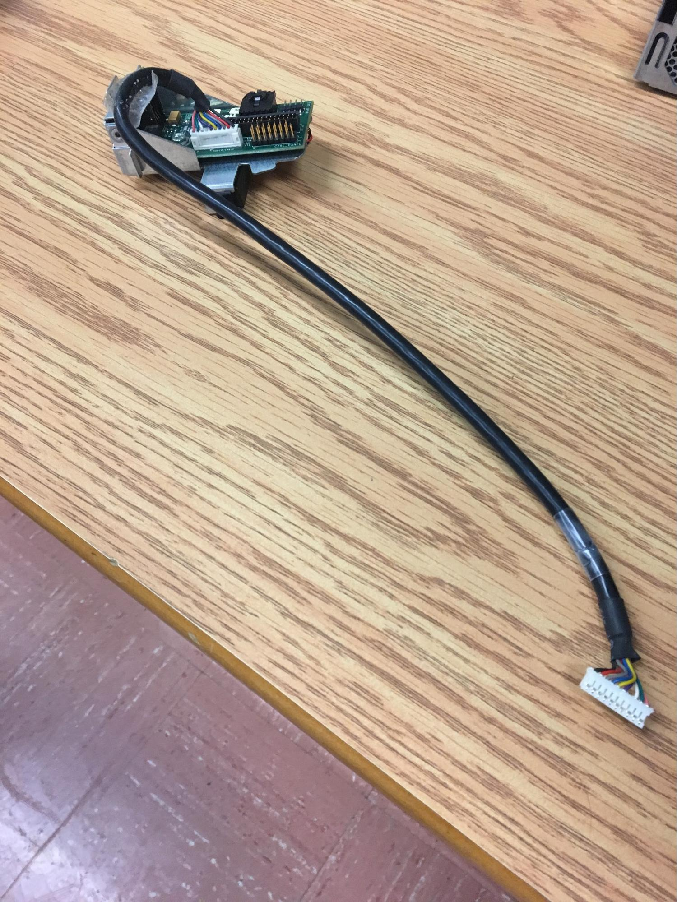The sound card, also known as audio card, is an internal expansion card. The sound card provides input and output of audio signal to and from the computer.
Video Card
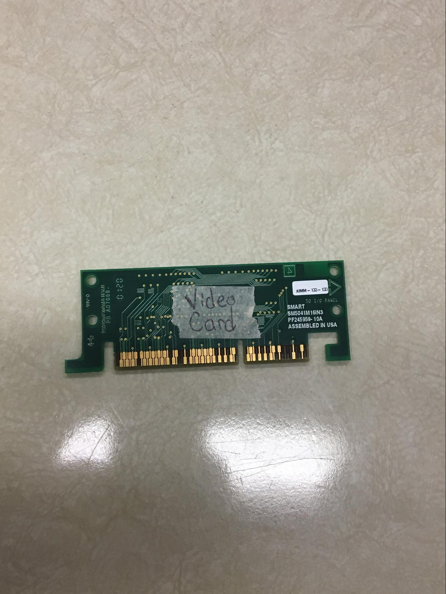Video Card displays image(s) on the monitor. It gets its data from the CPU and stores the information to video RAM. It’s ported by the AGP (Accelerated Graphics Port). Inside the video card, there is a special video card that scans the data and converts it to a digital image.
Heat Sink and Fan
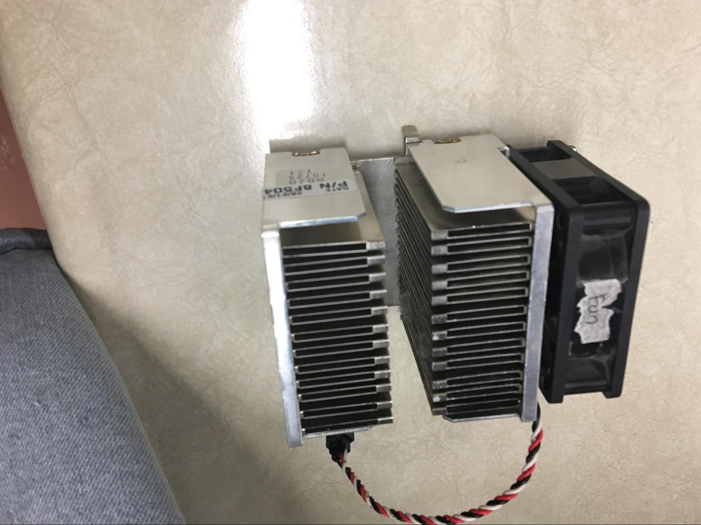The heat sink converts the generated heat from the device into a fluid medium, usually a liquid coolant or air to regulate the temperature of the CPU.
The fan is the black component beside the heat sink. The fan cools some of the components of the PC from overheating and damaging the parts. There is a fan on the CPU and power supply. The CPU performs millions of task per second so to prevent it from overheating while performing the millions of task the fan is used. The power supply converts the electricity so to also prevent it from overheating the fan is used.
Data Bus
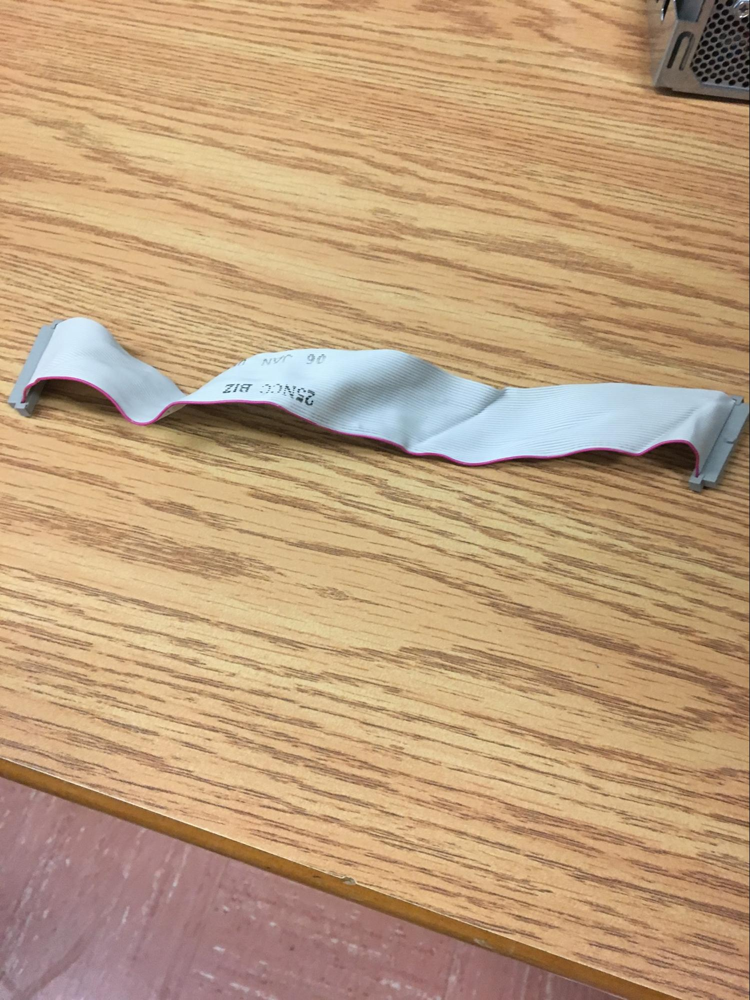Data Bus is a communication system that transfers data between components in the computer and out of the computer.
BIOS
(Basic Input/Output System) BIOS is a common use of a flash memory. BIOS is a chip found in the motherboard that instructs the computer how to do basic functions such as booting and keyboard control. It identifies and configures data from the hardware in a computer
Floppy Disk Drive
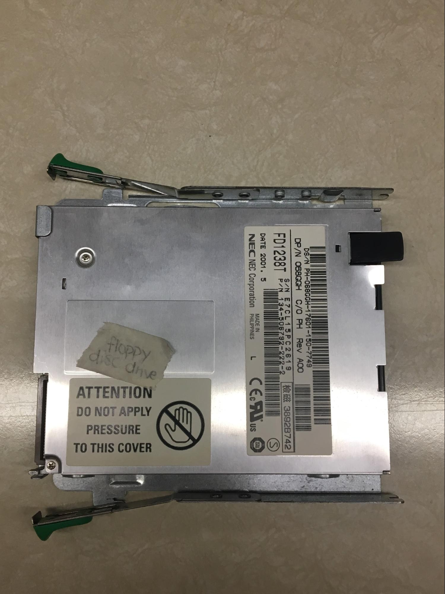The floppy disk drive is a component that reads data from a floppy disk with RAM memory, a magnetic disk that stores data used in the mid-1970s toward the mid-2000s.
CD-ROM Drive
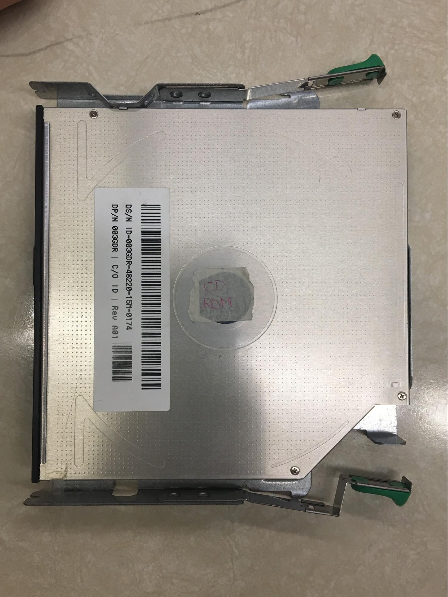CPU stands for Central Processing Unit. The CPU is a small electronic component that is occasionally called the brain of the PC. The CPU is responsible for two things. One of them is to carry out commands to make the other hardware parts perform the action. The other responsibility is to process data. Although the instructions the CPU performs are simple, they can execute millions and millions of instructions every second. The fact that the CPU can perform many tasks is what makes a PC powerful.
Hard Drive
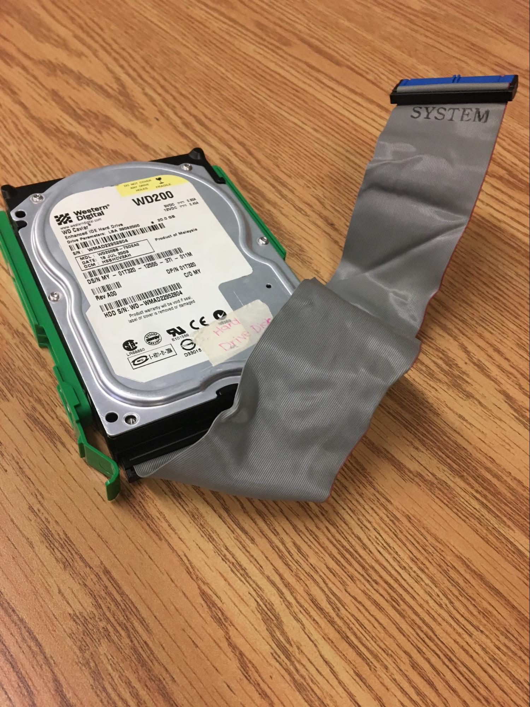Hard disk drive is a non-volatile memory hardware device that saves up information permanently. Data sent to hard drive is manipulated by the disk controller, where it reads the data saved on one of the CDs. The electromagnetic head reads the signal, whether it’s 0 or 1, and calculates the information.